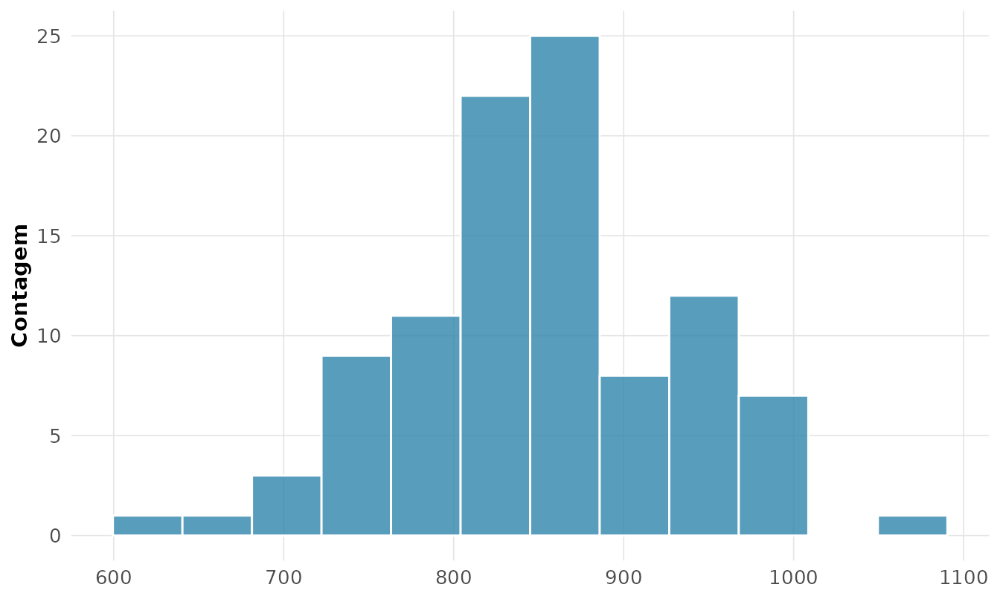
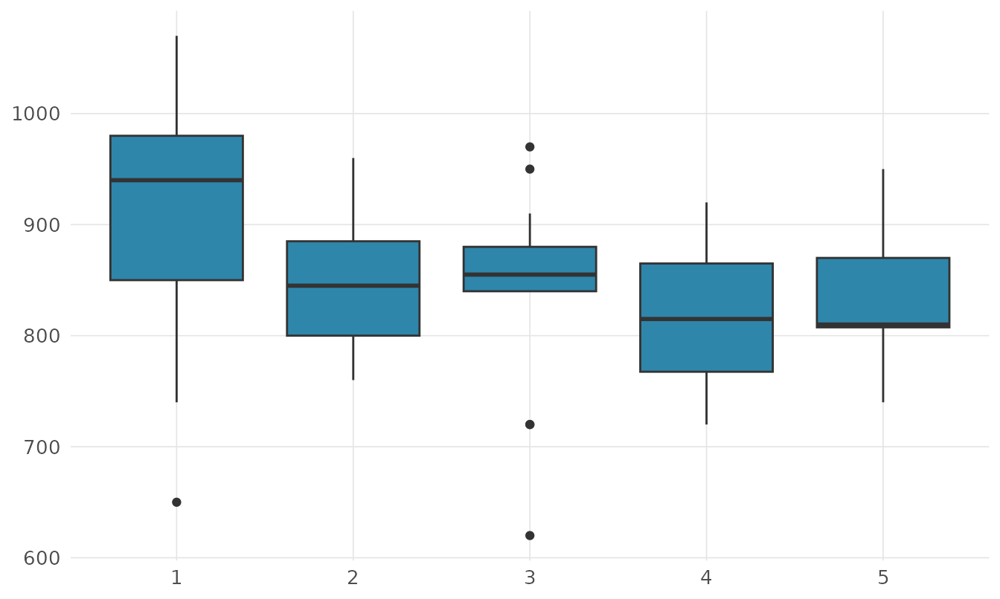

1. Estatística descritiva e análise exploratória
Source:vignettes/v01-descritiva.Rmd
v01-descritiva.RmdToda medida de engenharia traz variabilidade: dois corpos de prova do mesmo lote rompem a cargas diferentes, duas medições da mesma peça discordam na terceira casa. A estatística existe para descrever e domar essa variação (Montgomery and Runger 2021). A análise descritiva é o primeiro passo — resumir os dados por medidas e gráficos antes de qualquer inferência.
Usaremos um marco da metrologia: as 100 medições da
velocidade da luz feitas por Michelson em 1879
(morley), registradas como o valor em km/s menos 299 000
(Michelson 1882).
medicoes <- morley$Speed # km/s, subtraído de 299000
rnp_descritiva(medicoes)
#> # A tibble: 1 × 21
#> n n_validos n_faltantes soma media mediana moda desvio variancia min
#> <dbl> <dbl> <dbl> <dbl> <dbl> <dbl> <dbl> <dbl> <dbl> <dbl>
#> 1 100 100 0 85240 852. 850 880 79.0 6243. 620
#> # ℹ 11 more variables: q1 <dbl>, q3 <dbl>, max <dbl>, amplitude <dbl>,
#> # iqr <dbl>, cv <dbl>, se_media <dbl>, ic_inf <dbl>, ic_sup <dbl>,
#> # assimetria <dbl>, curtose <dbl>Exatidão e precisão
A média das medições corresponde a uma velocidade estimada de 2.99852^{5} km/s, enquanto o valor moderno é 299 792 km/s. Essa diferença sistemática de cerca de 60 km/s é um viés (erro de exatidão), distinto da dispersão aleatória (a precisão). Engenheiros separam os dois: a média localiza o centro; o desvio-padrão mede o espalhamento.
O divisor (os graus de liberdade) torna um estimador não-viesado da variância populacional: como os desvios em torno de somam zero, apenas deles são livres.
rnp_momentos(medicoes)$resumo
#> # A tibble: 1 × 6
#> media variancia desvio_padrao assimetria curtose_excesso n
#> <dbl> <dbl> <dbl> <dbl> <dbl> <dbl>
#> 1 852. 6243. 79.0 -0.0183 0.264 100A assimetria praticamente nula () e a curtose próxima da Normal sugerem uma distribuição simétrica — coerente com erros de medição aleatórios.
A regra empírica
Para dados aproximadamente Normais, a regra empírica afirma que cerca de 68%, 95% e 99,7% das observações caem a 1, 2 e 3 desvios-padrão da média. Verificando:
m <- mean(medicoes); s <- sd(medicoes)
sapply(1:3, function(k) round(mean(abs(medicoes - m) <= k * s) * 100, 1))
#> [1] 67 97 100Os valores observados (67%, 97%, 100%) acompanham de perto os teóricos (68,3%, 95,4%, 99,7%) — forte indício de normalidade, que justificará, adiante, o uso de intervalos de confiança e testes baseados na Normal.
Histograma e box plot
O histograma exibe a forma da distribuição:
rnp_grafico_histograma(morley, "Speed", bins = 12)
Michelson conduziu cinco experimentos de 20 medições. Comparando-os pelo box plot, revela-se algo que a média global esconde:
morley$Experimento <- factor(morley$Expt)
rnp_grafico_boxplot(morley, x = "Experimento", y = "Speed")
O primeiro experimento é sistematicamente mais alto (média 909 contra ~830 nos demais): um viés entre execuções, típico de problemas de calibração. Detectar diferenças entre grupos é o embrião da análise de variância (ANOVA).
O gráfico de probabilidade normal
A ferramenta que o engenheiro usa para decidir se um conjunto de dados é Normal é o gráfico de probabilidade normal: ele confronta os quantis amostrais com os teóricos da Normal. Se os pontos se alinham sobre a reta, a hipótese de normalidade se sustenta (Montgomery and Runger 2021).
rnp_grafico_qq(medicoes)
Os pontos seguem a reta de perto, sem curvatura sistemática — o teste de Shapiro-Wilk confirma (, não se rejeita a normalidade). Isso autoriza modelar as medições como Normais.
Dispersão relativa e robustez
| Medida | Fórmula | Quando usar |
|---|---|---|
| Desvio-padrão | dispersão na unidade dos dados | |
| IQR | dispersão robusta a outliers | |
| Coef. de variação | comparar variabilidade de escalas diferentes |
rnp_descritiva(medicoes)[c("desvio", "iqr", "cv")]
#> # A tibble: 1 × 3
#> desvio iqr cv
#> <dbl> <dbl> <dbl>
#> 1 79.0 85 0.0927O CV de 0.093 indica que o desvio-padrão é cerca de 9% da média — boa precisão para os instrumentos de 1879. Para detectar valores discrepantes, o critério de Tukey (cercas a ) é o mais defensável por ser robusto:
rnp_outliers(medicoes, method = "iqr")
#> # A tibble: 3 × 2
#> indice valor
#> <int> <int>
#> 1 4 1070
#> 2 14 650
#> 3 47 620Síntese
| Pergunta de engenharia | Função | Conceito |
|---|---|---|
| Qual o valor central e a dispersão? | rnp_descritiva |
média, , exatidão × precisão |
| Qual a forma? | rnp_momentos |
assimetria, curtose |
| Os dados são Normais? | rnp_grafico_qq |
gráfico de probabilidade normal |
| Há diferença entre execuções? | rnp_grafico_boxplot |
comparação de grupos |
| Há medições discrepantes? | rnp_outliers |
cercas de Tukey |
Descrever a variabilidade — e checar a normalidade antes de assumi-la — é o alicerce sobre o qual se constrói a inferência. O próximo passo, entender por que a média amostral se comporta de forma previsível, leva à probabilidade.
Exercícios
Resolva computacionalmente com o rnp, usando os
conjuntos morley, mtcars, trees,
faithful e airquality.
- Calcule média, mediana e desvio-padrão de
mtcars$mpg(rnp_descritiva). - O consumo
mtcars$mpgé assimétrico? Calcule e (rnp_momentos). - Compare o coeficiente de variação de
mtcars$mpgemtcars$hp: qual grandeza varia mais, em termos relativos? (rnp_descritiva). - Calcule as quatro médias (aritmética, geométrica, harmônica,
quadrática) de
c(2, 4, 8, 16)e verifique a desigualdade entre elas (rnp_medias). - Construa a tabela de frequências de
mtcars$cyl(rnp_tabela_frequencia). - Agrupe
mtcars$mpgem classes pela regra de Sturges (rnp_tabela_classes). - Identifique os outliers de
mtcars$hppelo critério de Tukey (rnp_outliers). - A variável
trees$Volumeé Normal? Use o gráfico de probabilidade normal (rnp_grafico_qq) e o teste de Shapiro-Wilk (rnp_teste_normalidade). - Construa um box plot de
mpgpor número de cilindros e descreva as diferenças (rnp_grafico_boxplot). - Verifique a regra empírica (68-95-99,7) para
mtcars$qsec. - Construa a tabela de contingência entre
cylegear(rnp_tabela_contingencia). - O histograma de
faithful$waitingsugere quantas modas? (rnp_grafico_histograma). - Calcule os momentos de
airquality$Wind(removendo NA): a variável é simétrica? (rnp_momentos). - Resuma a estrutura de
airquality(rnp_estrutura): quantas variáveis têm valores faltantes e em que proporção? - Compare a precisão (desvio-padrão) entre os cinco experimentos de
morley: qual foi o mais preciso? (rnp_descritiva_by).